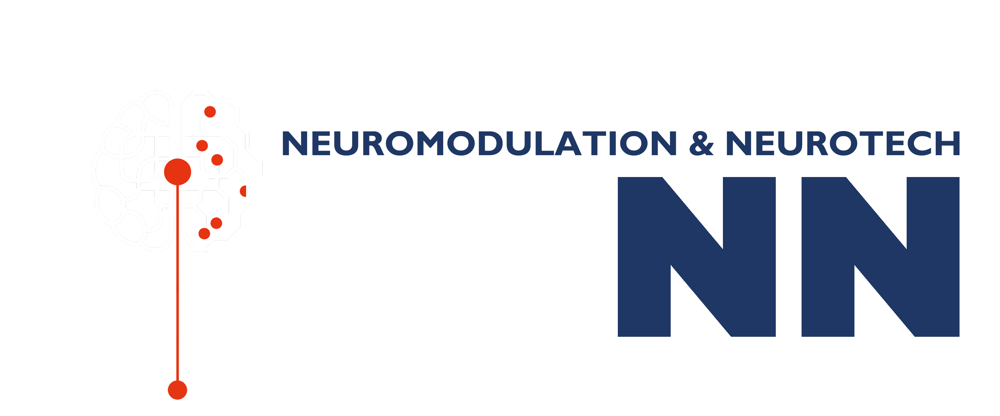

[Feature image]
Featured

The Graduate Advancement in Neuromodulation & Neurotechnology (GAINN) program brings together engineering, neuroscience, and clinical research to prepare trainees to develop and evaluate technologies that interact with the nervous system.
Through interdisciplinary coursework, hands-on research, commercialization and entrepreneurship training, and opportunities for internships or academic exchanges, trainees build skills across the neurotechnology pipeline: from technology design and data analysis to mechanistic research and validation. GAINN aims to prepare collaborative, adaptable researchers and professionals to contribute to the growth of neurotechnology in Canada.
[Pull quote — one line.]
GAINN trainees participate in a comprehensive training program that complements their graduate research. Graduate trainees are expected to:
Complete the Collaborative Specialization in Neuromodulation & Neurotechnology.
Complete entrepreneurship and commercialization training.
Undertake a collaborative mobility experience in an academic and/or industry setting outside their primary research environment.
Participate in GAINN workshops, seminars, and research events, including presenting their research at the CRANIA Conference.
These activities are designed to broaden trainees’ scientific and professional skills, foster interdisciplinary and cross-sector collaboration, and prepare them for careers across academia, healthcare, and industry.
[LOCATION] · [TIME] · [REGISTRATION]
[LOCATION] · [TIME] · [REGISTRATION]
[LOCATION] · [TIME] · [REGISTRATION]
[Supporting line.]
The GAINN program is supported by the Natural Sciences and Engineering Research Council of Canada (NSERC) through its Collaborative Research and Training Experience (CREATE) program.